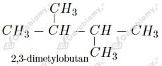

a)
Najdłuższy łańcuch węglowy składa się z 8 atomów węgla.
Numeracja atomów węgla:
Rzędowość atomów węgla:
b)
Najdłuższy łańcuch węglowy składa się z 7 atomów węgla.
Numeracja atomów węgla:
Rzędowość atomów węgla:
a)
Dwa różne związki chemiczne będące homologami.
b)
Ten sam związek.
c)
Dwa różne związki chemiczne będące izomerami.
Nazwa 2-etylo-2-metylopropan jest nazwą niepoprawną .
Wzór półstrukturalny takiego związku (z zaznaczonym łańcuchem głównym) miałby postać:
Prawidłowa nazwa to zatem 2,2-dimetylobutan .
Wzory i nazwy izomerów:

Wzór strukturalny:
liczba atomów I-rzędowych: 5
liczba atomów II-rzędowych: 2
liczba atomów III-rzędowych: 1
liczba atomów IV-rzędowych: 1